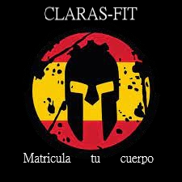

Copa Clara Del Rey
Ha llegado la fiebre de las carreras al IES Clara Del Rey, desde los alumnos con sus ciclomotores hasta los profesores en sus bicicletas, sí sí como lo oyen, tras esta iniciativa
no esta otro más que nuestro amado y respetado Jefe de Estudios que tras la noticia de las 108 incidencias del aula I.6, ha decidido realizar esta carrera benéfica para poder sufragar
los gastos de estos alumnos tan desamparados. La participación es de 5€ y la diversión esta garantizada en este evento donde el premio no es otro que... ¡Un cupón de uso infinito en la cafeteria!
Dado semejante premio no son pocos los alumnos con carnet que han decidido utilizar su aplicación de Cooltra
e incluso comprar patinetes eléctricos para inscribirse en la carrera.
Sin embargo la mayor atracción la han generado dos de los profesores de ASIR, y no hablo solo de la espectación, pues al parecer, antiguas alumnas de estos profesores han
montado un club de fans mostrando su apoyo incondicional a sus pasados tutores. En primer lugar tenemos a Manuel Retamosa, un profesor algo duro por fuera pero con un gran corazón (quizás hecho de
componentes del taller) participa para que sus alumnos porfín puedar dar clase en condiciones y utilizar su "tan adorado Linux ". Y por último pero no menos importante Jose Antonio,
un profesor con un gran sentido del humor y una habilidad innata para la programación, hay quien lo cataloga como el "políglota informático ", pero que no les engañen estas palabras pues cuenta en su haber con una gran
experiencia en el ciclismo así como con su poderosa bicicleta de ciudad, que si bien no es la más rápida, es 100% ergonómica y plegable.
Esperamos poder ver el desenlace de este épico duelo entre el Software y el Hardware del Clara del Rey.

Claras-Fit
Tras un par de años convertido en un "almacen/cementerio" de material escolar, equipos obsoletos y componentes electrónicos, el IES Clara Del Rey reabre su gimnasio bajo el nombre deClaras-Fit.
En los últimos años la famosa Spartan Race ha ganado popularidad entre atletas, aficionados a la calistenia y masoquistas habituales del Cross-Fit, asi que la dirección de nuestro instituto cansada de ver como año tras año
se llenaba el gimnasio, ha decidido sumarse al movimiento y sacar partido de su trastero particular. Este "gimnasio" si puede llamársele así, pues, es más parecido a un circuito diseñado para los gladiadores de la antigua Roma,
consta de ejercicios poco convencionales donde llevaras tu cuerpo y tu mente a un Grado Superior.
Por mencionar algunos de dichos ejercicios, tienen la escalada de mesas, un exigente ejercicio que consiste en escalar una pila de sillas y mesas para después cargar con todas las posibles y transportalas a traves del centro
hasta las aulas, donde algun que otro compañero estara esperando con ojitos de cordero porque no tendrá donde instalarse durante su ciclo formativo, otro de los numerosos ejercicios se realiza bajo la supervisión de un profesor, en este ejercicio deberas ser capaz de transportar, conectar, chequear
desmontar y remontar un ordenador en menos de 10 minutos, es sin duda un ejercicio que requiere de cardio, control de la coordinación y mucha agilidad mental. Si después de esto sigues con hambre de más, hemos reservado el ejercicio
final para tí, bajo la guía y tutela de Maria Jose deberás ser capaz de levantar y mantener indefinidamente un gran numero de redes y subredes, con el correspondiente peso de su tráfico. ¿Podrás aguantar 200 terabytes?¿Serás capaz de rearmar el ordenador
a tiempo?¿Podrán algún día tener un sitio en su clase los compañeros? Si quieres descubrirlo unete a nosotros en el Claras-Fit.
Claras-Fit Matricula tu cuerpo

Vlans Of Claras
Los E-Sports llegan al IES Clara Del Rey gracias al esfuerzo de nuestros compañeros deDAWD, que inspirados por el gran trabajo de los profesores y tomandolos como modelo, han decidido hacer su adaptación personal del famoso juego de movil,Clash Of Clans
Entre las novedades de esta adaptación nos encontramos con el rework de emblemáticas cartas como:
- "El Montapuertos", montado sobre su CPU y cable en mano, este aguerrido informático sellará los puertos de expansión de la placa enemiga.
- "El taller del ensamblador", donde podrás alojar de 3 a 5 alumnos para que ayuden a construir y reparar los equipos y componentes de nuestro sistema.
- "La Torre de Routers", esta magnifica estructura ahora puede dar una conexión real sin importar su localización o la distancia de los equipos.
Entre las futuras incorporaciones nos llama la atención una carta llamada "Pitón" y nos la describen como <<Una poderosa herramienta capaz de resolver los problemas mas complejos>>.
¿Estáis listos para Vlans Of Claras? Crea y expande tu propia placa base, unete a tus amigos y juega con ellos para crear una poderosa CPU.